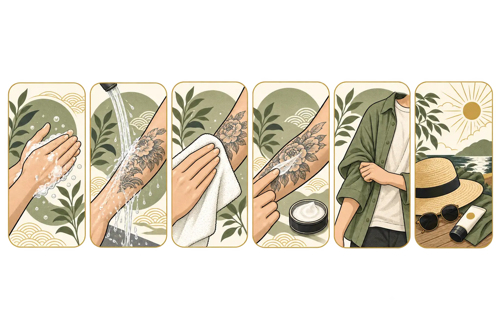

TAROH TATTOO GUIDE
ケアは、施術者からの案内を最優先に。
使用する保護材、デザインの大きさ、施術部位、肌の状態によって案内は変わります。このページは一般的な流れを確認するために使い、当日に受けた説明を優先してください。
01
完成までのケアの流れ
皮膚の状態には個人差があります。スタジオから個別の指示がある場合は、そちらを優先してください。
施術当日
保護材を外す時間は施術者の指示に従います。触れる前に手を洗い、清潔を保ちます。
1〜3日目
ぬるま湯でやさしく洗い、清潔なタオルやペーパーで押さえるように水分を取ります。指定された保湿剤は薄く。
4〜14日目
乾燥、薄いかさぶた、かゆみが出ることがあります。掻いたり剥がしたりせず、摩擦を避けます。
2〜4週間以降
表面が落ち着いても内側は回復途中の場合があります。強い紫外線を避け、保湿を続けます。
02
してよいこと・避けたいこと
基本のケア
- 触る前に手を洗う
- やさしく洗って清潔にする
- こすらず押さえて乾かす
- 案内された保湿剤を薄く使う
- 清潔でゆったりした服を着る
治るまでは避ける
- 湯船、プール、海、サウナ
- 強い日焼けや日焼けマシン
- かさぶたを剥がす・掻く
- 締め付けや強い摩擦
- 自己判断で消毒を繰り返す
03
気になる症状がある時
赤み・腫れ・熱感・痛みが強くなる、膿のような液が出る、発熱や体調不良がある場合は、自己判断で様子を見続けず医療機関へ相談してください。このページは一般的なケア情報で、診断の代わりではありません。
04
アフターケアQ&A
シャワーは浴びられますか？
一般に短時間のシャワーは可能ですが、保護材の扱いを含め施術者の指示を優先してください。長時間の入浴や浸水は避けます。
かゆい時はどうしますか？
掻いたりかさぶたを剥がしたりせず、清潔と適度な保湿を保ちます。強い症状は相談してください。
運動はいつからできますか？
部位や運動内容により摩擦、汗、伸縮の影響が異なります。施術時に具体的な予定を伝えて確認してください。